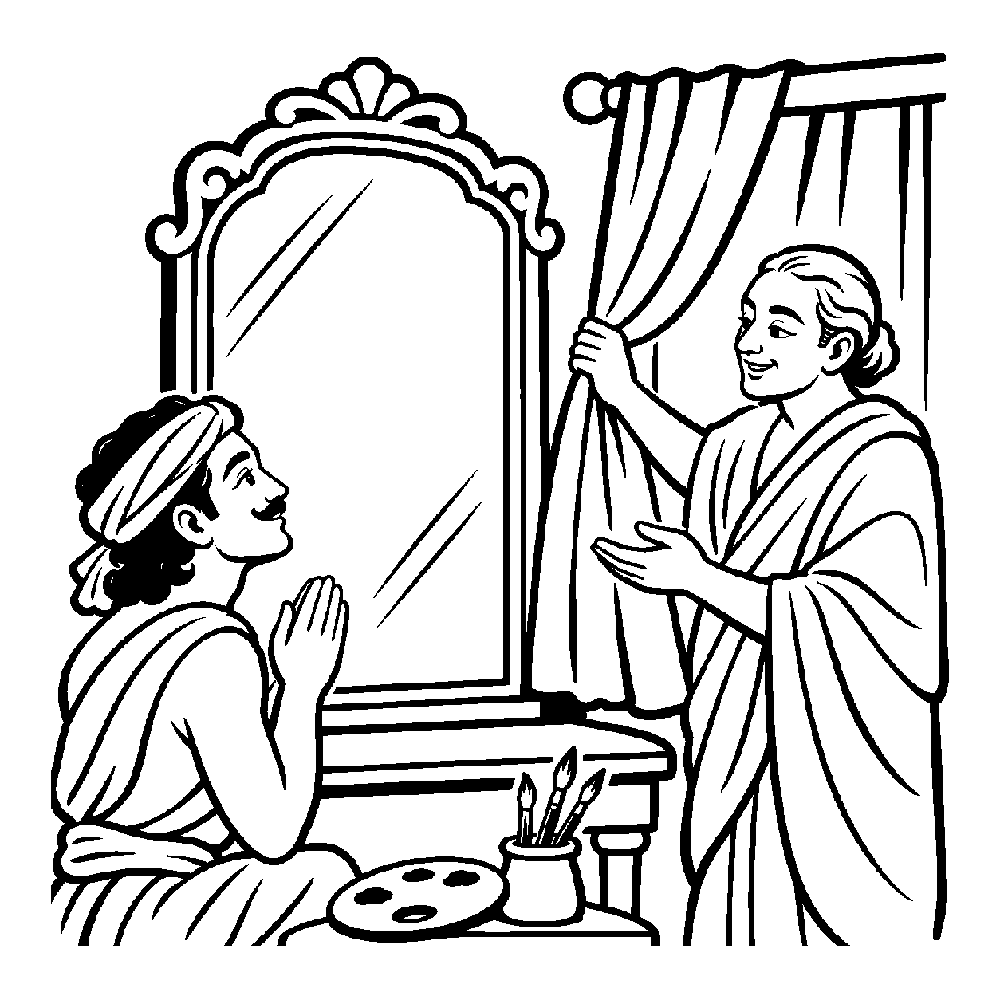

એક સુંદર કાચના સ્વચ્છ અરીસા સામે જ્યારે ગુલાબનું લાલ પુષ્પ મૂકવામાં આવે છે, ત્યારે અરીસાના તળ પર તે પુષ્પનું આબેહૂબ પ્રતિબિંબ ઉપસી આવે છે. કોઈ વ્યક્તિ અરીસાની સપાટી તરફ આંગળી ચીંધીને સહજતાથી બોલી ઊઠે છે: "જુઓ, આ અરીસો કેટલો સુંદર અને લાલ રંગે રંગાયેલો છે!" વાસ્તવમાં લાલ પ્રતિબિંબ એ પુદ્ગલની એક પર્યાય છે અને કાચનું ચોખ્ખું ફલક એ પુદ્ગલની બીજી ભિન્ન પર્યાય છે. છતાં પણ એક જ જાતિના પુદ્ગલ દ્રવ્યની એક પર્યાયમાં તે જ જાતિની અન્ય પર્યાયનો આરોપ કરીને — પ્રતિબિંબને જ અરીસો કહી દેવો — તે 'સ્વજાતિપર્યાયે સ્વજાતિપર્યાયોપચારક અસદ્ભૂત વ્યવહાર' છે.
જ્યારે એક જ દ્રવ્યની બે અવસ્થાઓ પરસ્પર સંકળાયેલી હોય, ત્યારે વ્યવહારની ભાષામાં એક અવસ્થાને બીજી અવસ્થાનું રૂપ આપી દેવામાં આવે છે. સરોવરના શાંત જળ પર પવનની લહેરો ઊઠે ત્યારે "પાણી ઊછળી રહ્યું છે" એમ કહેવાય છે; દીપકની જ્યોતમાંથી નીકળતી કાળી મેશને "દીવો કાળો થઈ ગયો" એમ કહેવામાં આવે છે. અહીં બંને પર્યાયો પુદ્ગલ જાતિની જ છે, છતાં મૂળ સ્થિર પર્યાય પર આકસ્મિક પર્યાયનો ઔપચારિક આરોપ મૂકીને લૌકિક વ્યવહાર ચાલે છે.
આ નય સાધકને જાગૃત કરે છે કે મનની સપાટી પર ઊઠતા સંકલ્પ-વિકલ્પના પ્રતિબિંબો એ ચિત્તનો સ્થાયી સ્વભાવ નથી, કેવળ ક્ષણિક પર્યાયો છે.
કાચ તણા ફલકે ઝળકે, લાલ ગુલાબી છાય;
છાયાને દર્પણ ગણી, જગ વ્યવહાર ચલાય.
પર્યાયે પર્યાય ભળે, એક જાતિ ઉપચાર;
ભીતર સ્થિર જોતાં શમે, મનનો સહુ વિસ્તાર.
તે વ્યવહારિક સંયોગોની મર્યાદા દર્શાવીને પણ આંતરિક ગુણો પ્રગટાવવાની પ્રેરણા આપે છે, જેથી સાધક નિજ ચૈતન્ય સ્વરૂપમાં મહામૌનમાં અંતર્લીન થઈ જાય છે.

એક નગરમાં કલાપ્રેમી ચિત્રકાર ચિત્રસેન રહેતો હતો. તેણે પોતાના ખંડમાં એક અત્યંત મોટો અને નિર્મળ કાચનો અરીસો લગાવ્યો હતો. એક સંધ્યાકાળે બારીમાંથી આકાશમાં સંધ્યાના રક્તવર્ણી વાદળો ઘેરાયા અને તેનો રંગ અરીસામાં આબેહૂબ ઝિલાયો. ચિત્રસેન અરીસાને સ્પર્શીને કલાકો સુધી રડવા લાગ્યો: "અરેરે! મારો દૂધ જેવો શ્વેત અરીસો રક્તરંજિત થઈ ગયો! તેનો મૂળ કાચ કાયમ માટે બગડી ગયો!" તે અરીસાને ધોવા માટે કપડાં ઘસવા લાગ્યો, પણ પ્રતિબિંબ તો આકાશના વાદળોનું હતું. અરીસાની સ્થિરતા અને પ્રતિબિંબની ક્ષણિકતા વચ્ચેનો ભેદ ન સમજાતાં તે ઊંડી ચિંતામાં ડૂબી ગયો.
તે જ સમયે એક પ્રજ્ઞાવાન સંત ત્યાં પધાર્યા. તેમણે ચિત્રસેનને વ્યાકુળ જોઈને સ્મિત કર્યું અને બારીનો પડદો પાડી દીધો. પડદો પડતાં જ અરીસામાંથી સંધ્યાનો લાલ રંગ અદૃશ્ય થઈ ગયો અને કાચ ફરી નિર્મળ ચમકવા લાગ્યો. સંતે મૃદુ વાણીમાં સમજાવ્યું: "વત્સ! સ્વજાતિપર્યાયે સ્વજાતિપર્યાયોપચારક અસદ્ભૂત વ્યવહારને ઓળખ! લાલ રંગ એ આકાશની છાયાનું પ્રતિબિંબ હતું અને કાચ એ પૃથક્ પર્યાય હતો. પ્રતિબિંબ કાચમાં સમાયું નહોતું, કેવળ વ્યવહારથી આપણે પ્રતિબિંબને જ કાચ કહી દીધો હતો. પુદ્ગલની એક પર્યાયમાં બીજો પર્યાયનો આ ઉપચાર કેવળ લોકવ્યવહાર પૂરતો છે." આ સાંભળતાં જ ચિત્રસેનની ભ્રાંતિ ઓગળી ગઈ. ચિત્તના ક્ષણિક પ્રતિબિંબો પાછળ દોડતી તેની વૃત્તિઓ સમેટાઈ ગઈ અને તેનું મન પરમ વિશ્રામમાં લીન થઈ ગયું.
જો જીવ પ્રતિબિંબને જ અરીસાનો મૂળ સ્વભાવ માની લે, તો તે ક્ષણિક વિકારોમાં અટવાઈને ભય અને મોહના વંટોળમાં ઘેરાઈ જાય છે. પરદ્રવ્યો કે ક્ષણિક સંયોગોને જ સર્વસ્વ માની લેવાથી મમત્વ અને પરિગ્રહનો ભાર વધે છે, જે ચિત્તને સદા આકુળ-વ્યાકુળ રાખી આધ્યાત્મિક જાગૃતિને રૂંધી નાખે છે.
આ નય પ્રતિબિંબ અને મૂળ ફલક બંનેની પર્યાયગત મર્યાદા બતાવે છે, જેથી સાધક બાહ્ય ભાવોથી અપ્રભાવિત રહી મહામૌનમાં અંતર્લીન થઈ શકે છે. તે વ્યવહારિક સંયોગોની મર્યાદા દર્શાવીને પણ આંતરિક ગુણો પ્રગટાવવાની પ્રેરણા આપે છે, જેથી સાધક નિજ ચૈતન્ય સ્વરૂપમાં મહામૌનમાં અંતર્લીન થઈ જાય છે.